Tutorial 12 – Working with the Spray, Extrude, and Envelope
Tools
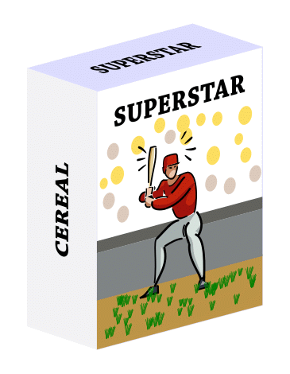
The Spray tool lets you apply multiple objects
by painting them onto the page. The Spray tool offers options that make
creating repetitive shapes, such as grass, or stars in the sky, easy and fun.
You can create 3-D objects using the Extrude tool and then map images that
contain sprayed objects with the Envelope tool.
In this lesson, you’ll learn how to do the following:
Create an object to copy, clone, or transform into a path
using the Spray tool.
Apply object instances using the Spray tool.
Modify and redefine an object instance.
Use sprayed object instances for 3D mapping.
Create a box shape using the Extrude tool.
Attach grouped objects to a box shape using the Envelope tool.
Getting Started
In this lesson, you’ll finish artwork for a poster.
Start Inkscape.
Download file Tutorial12end.svg
and store it in a convenient location. Choose File >
Open and open file Tutorial12end.svg.
If you like, choose View > Zoom > Zoom Out to
make the finished artwork smaller, adjust the window size, and leave it on
your screen as you work. (Press <Ctrl>-A to group-select the artwork
and then move it with the Select tool () to where you want it in the
window.) If you don’t want to leave the image open, choose
File > Close.
To begin working, you’ll open an existing art file set up for
the artwork. Download file Tutorial12start.svg
and choose File > Open to open it.
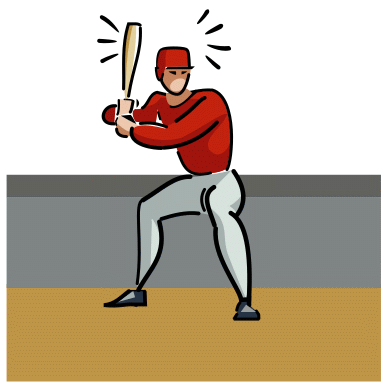
Starting image for Tutorial 12.
Choose File > Save As… and name the file
ballgame.svg.
Creating an Object to Use with the Spray Tool
You create an object to be sprayed onto your artwork like any other object.
It acts, however, as the source for duplicates that you spray on as if you
were using an air brush that sprays on droplets of paint, but not just colors.
For example, if you create an object in the shape of a blade of grass, you
can then add instances of that grass multiple times to your artwork by
spraying it on using the Spray tool.
When you click on the Spray tool icon () in the
toolbox, the Spray Tool Controls Bar appears above or to the right of
the work window (depending on how you configured toolbar placement),
presenting options to modify how the tool operates.
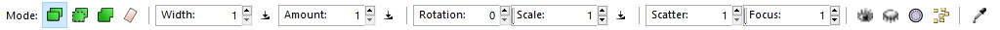
Spray Tool Controls Bar.Left portion of Spray Tool Controls Bar.
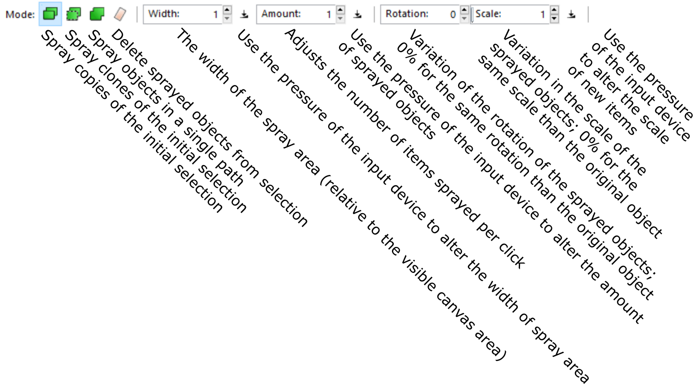
Right portion of Spray Tool Controls Bar.
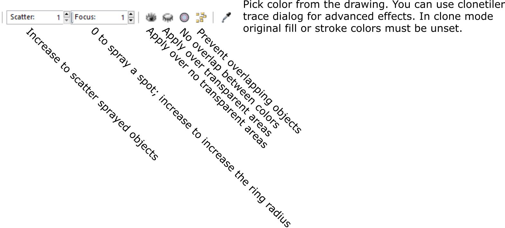
If you choose the Spray copies option, you can spray on just
copies of the original object. Each copy is a stand-alone object that you can
edit or replace independently of all the other copies. If you later want to
modify selected instances, you can, using the Select tool ()
and one or another technique of group-selection.
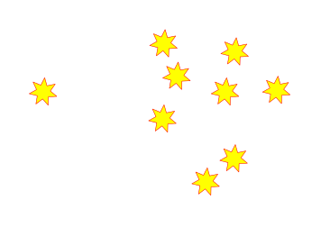
Example of spraying objects in Copy mode.
Source object on the left, sprayed duplicates on the right.
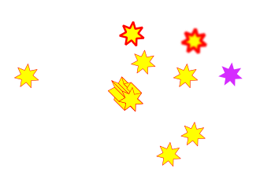
In Copy mode, individual duplicated objects can be
modified.
If you chose the Spray clones option, then all clone
instances are linked to the original source object. This means that you can
alter all instances by selecting the original instance, and then
editing or replacing it – all instances of that object will be updated.
You can turn that grass from brown to green instantly! This tool can be a
great time-saver as you create your artwork.
When Clone mode is used, duplicated objects are linked to their
source object. When a source object is modified, all corresponding
sprayed objects are also modified. Source object on the left, sprayed
duplicates on the right.
If you choose to work with the single path option, then all
duplicated objects become part of a single path. If any of the sprayed objects
overlap, the overlapping strokes are removed, creating the appearance that
the objects have been merged (into a path union).
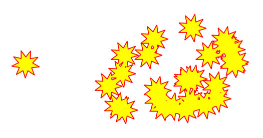
When Single path mode is used, duplicated objects are converted
into paths and merged together into a path union (single path).
Source object on the left, sprayed duplicates on the right.
Inkscape objects that can be used are: paths, compound paths, text,
raster images, mesh objects, and groups of objects. You can use active
objects, such as blends, effects, or other object instances that make up a
larger object.
You can find more information about the Spray Tool at Help >
Inkscape Manual > 12. Spray Tool.
Creating a Simple Source Object for Spraying
You will first start by adding a crowd to the start file image.
To prevent accidentally moving the background as you add and modify
objects, click on the colored portion of the background to select the entire
rectangle. Note that the upper portion of the background has a white fill.
Choose Object > Object Properties…, and click on
the Lock checkbox to lock the background. You cannot edit it until you
unlock it.
Select the Ellipse tool () in the toolbox, and click and drag
to create the shape of a head.
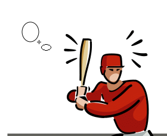
Creating the shape of a head.
Applying a Spray Object Instance
Now you’ll use the Spray tool to apply the face to your
illustration.
With the face object still selected, click on the Spray tool () in
the toolbox.
Use the Copy mode for spraying. Some good settings are:
Width: 3, Amount: 3, and Scale: 0. Click on the
Apply over no transparent areas icon
() — any seemingly blank areas
have a white fill, thus are not transparent.
Click and drag using the Spray tool, much like an airbrush, or can
of paint, to create a crowd with your face object. Experiment dragging at
different speeds. You’ll find that the number of copies that appear
changes with how fast you drag the mouse.
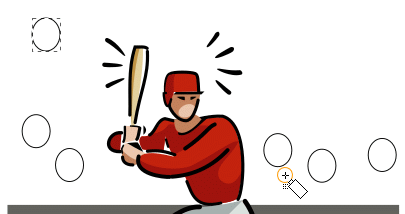
Spraying on copied faces.
Now you will apply colorization to the copied faces.
Group-select all the faces, source and copies. <Shift>-click
and <Shift>-drag work in this situation where you have disjoint
batches of objects.
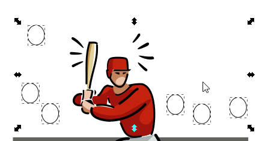
Group-select faces in preparation for mass
colorization.
Click on the Flat color icon. The face objects fill with black.
Enter dccabcff in the RGBA text box and press <Enter>
or <Return> to set a pinkish color.
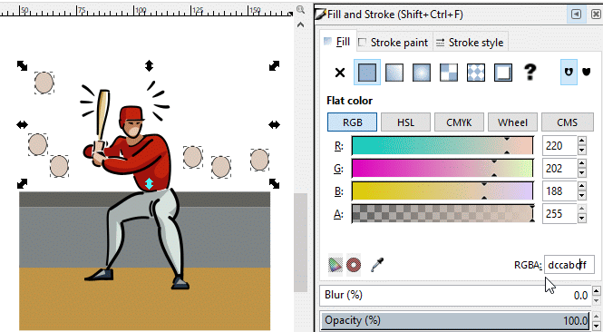
Changing the color of the faces to pink.
Click on the Stroke paint tab. Click on the No paint
icon to set the black stroke color to transparent.
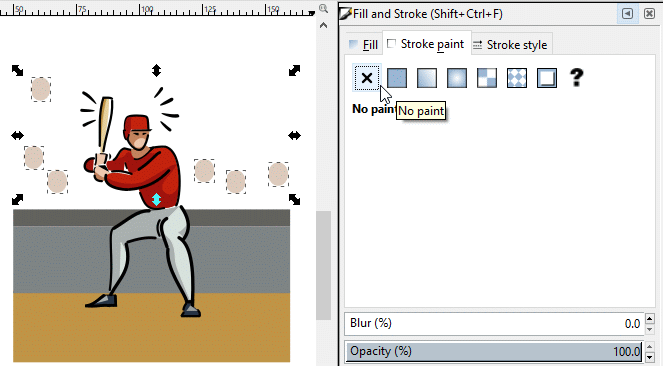
Eliminating the black stroke.
Click of the artwork to deselect the original face object.
Create a new batch of faces still using Copy mode.
Draw a source face, set its fill color to fcde60ff in the
RGBA text box, and its stroke to No paint.
Then, select the Spray tool (), set Scale to 30 for a wide
range in size variation, and start spraying.
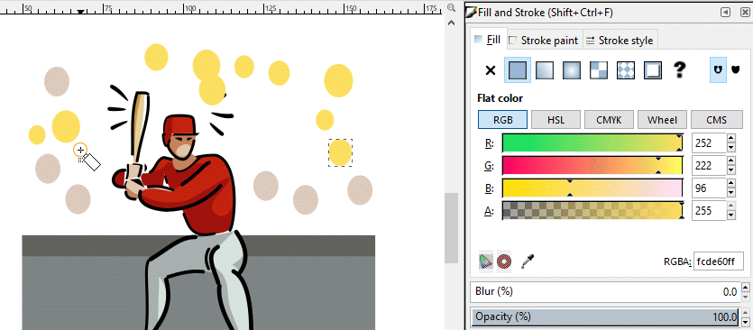
Spraying on new face objects using Copy mode.
Create one last face and set its color to the pink of the
“front-most” faces using the Dropper tool ()
in the Fill panel. Set its stroke to No paint. Adjust the
placement and size of faces as you desire. Note that a couple of faces
have been added. The faces placed behind the head brush strokes were lowered
in the stacking order using the Lower selection one step tool () in the Tool Controls Bar twice so they stand
behind the strokes.
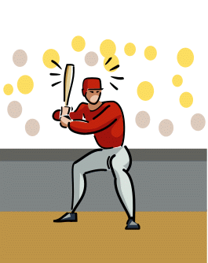
Making final adjustments to the faces.
Editing Spray Source Objects
In the next steps, you will add an additional source object, then edit
and update it.
While on the Select tool (), click anywhere off the
artwork to make sure that no objects are selected.
Using the Pen tool () in the toolbox, create several blades of grass.
Draw at least 8 line segments to make a tuft of grass. Don’t be
worried if they’re a different color than the color as shown
below. You’ll change the color shortly.
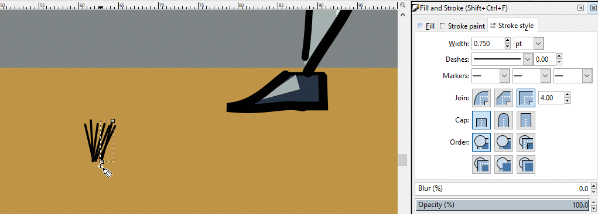
Making a tuft of grass.
These line segments are individual objects. In preparation for
spraying whole tufts of grass, you’ll need to group the line
segments.
Group-select the collection of line segments and then press
<Ctrl>-G to group them into one grass-tuft object.
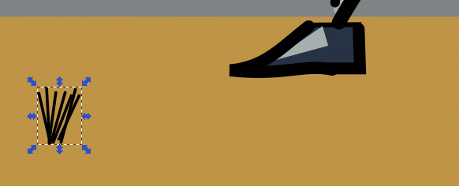
Grouping the individual blades of grass into a grouped
tuft of grass.
You will now change the tuft of grass to a green color. Choose
Object > Fill and Stroke… to bring up the Fill
and Stroke panel. Click on the Fill tab if it isn’t
selected already. Make sure the No paint icon ()is selected. <Shift>-click on the Green swatch in the Color
palette at the bottom of the work window to set the grass tuft stroke color
to green. Keep the source tuft of grass selected.
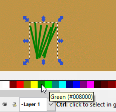
Grouping the individual blades of grass into a grouped
tuft of grass.
Click on the Spray tool (), make sure the Mode to Spray copies
of the initial selection, Width to 6, Amount to
8, and set Apply over no transparent areas (). Then spray over the bottom panel of the background
to simulate tufts of grass growing on a baseball field.
If you don’t like the result, then delete all the duplicate tufts of
grass and respray.
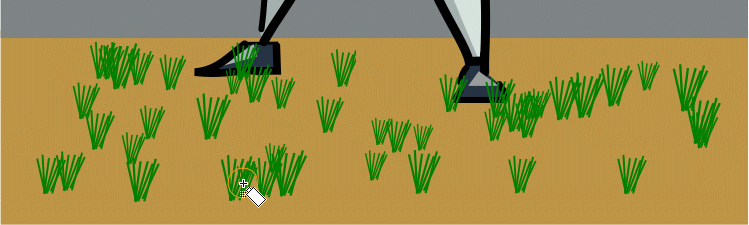
Copying the tuft of grass.
File > Save.
Current artwork.
Updating a Spray Source Object
Perhaps 0.75 pt blades of grass are too thin. In this next section, you
will edit the blades of grass.
Group-select all the tufts of grass. Here is where having the
background panels locked offers you the convenience of working without
inadvertently moving, copying, or deleting the background. You’ll
need to unlock it later when you apply it to a 3-D box model. If the
Fill and Stroke panel has been closed, reopen it and click on
the Stroke tab. Change the stroke width to 1 pt. The blades
of grass all become thicker.
Grass blade stroke thickness changed to 1
point.
File > Save. File > Close this
file.
Mapping an Object to 3D Artwork
Objects can be mapped to 3D artwork to create labels and textures. In
this next section, you will create a cereal box with your baseball player
on the front panel and a text object on the top and side.
Choose File > Open, and open the
ballgame.svg file you were working on earlier.
You are going to add a text label at the top of the image.
Select the Text tool () in the toolbox, click anywhere on the work
window to set the location of the text, and type SUPERSTAR. The text will
be the in the last font and in the last font size you used. In the figure
below, the font is sans-serif, normal, 12 pt.
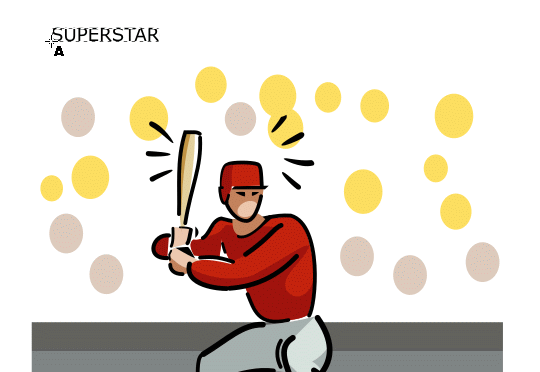
Typing the box title text.
With the Text tool () and text still selected, look for an
attractive font to use (we used Chapparal Pro, bold). Set the font size to
45 pt.
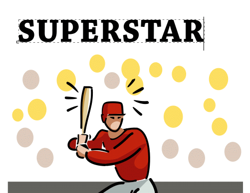
Changing the font and font size to Chapparal Pro bold,
45 points.
You need to center the box title text horizontally in the image.
The problem is that you cannot see the side borders. You can by choosing
View > Display mode > Outline. The border is
now visible.
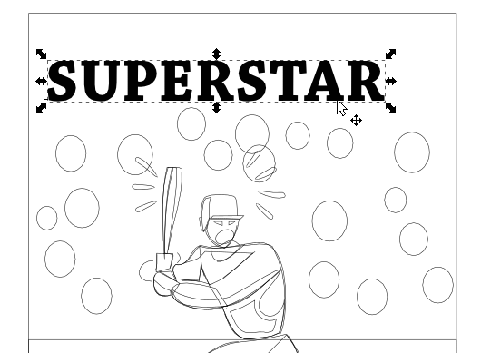
Changing the View to Outline.
If the box title text is still selected, then group-select the box
border using <Shift>-click.
Choose Object > Align and Distribute… In
the Align and Distribute panel, click on the Center on vertical
axis icon to horizontally center the text. The text is immediately
centered.
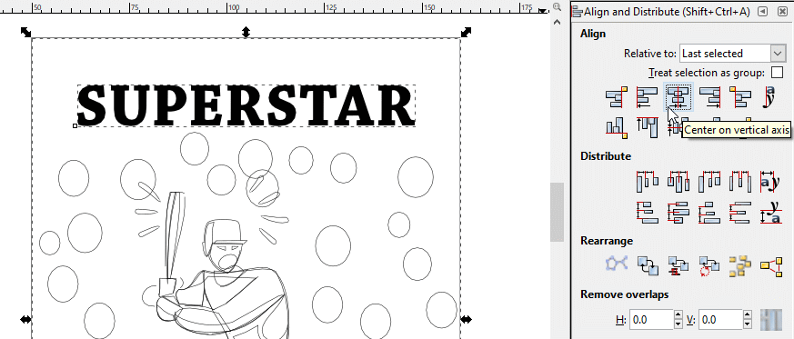
Centering the box title text.
Make a duplicate of the SUPERSTAR text using <Ctrl>-D or by
choosing Edit > Duplicate. Move the duplicate text above
the artwork. You’ll work with it shortly to place it on the top of
a 3-D box that you will create.
Type CEREAL to the side of the artwork. Using the Text tool (), set
the text’s font to the font you used for the box title text (We used
Chaparral Pro, bold) and the font size to 45 pt.
With the text still selected, click on the Select tool ()
in the toolbox and then click on the Rotate selection 90°
counter-clockwise icon () in the Tool
Controls Bar to make the text vertically oriented. This text CEREAL will
be placed on the side of the eventual 3-D box.
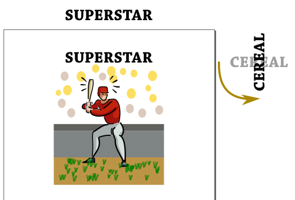
Typing and rotating the text that goes on the side of
the 3-D box.
Making a Three-dimensional Box Using the Extrude Tool
You can make boxes, cylinders, and other objects that allow you to make
a prism out of a top and bottom geometric shape. I recommend that you use
it to create objects that have a sense of nearness to you, the observer. If
you want to create an object that gives the illusion of great size and
distance from near point to far point, then you might achieve more
desirable results using the Perspective Tool.
You will create a box where the observer’s point of view is from
the top and to the front left side.
Draw a rectangle with the Rectangle tool ().
Make it a little narrower in width than the box front image.
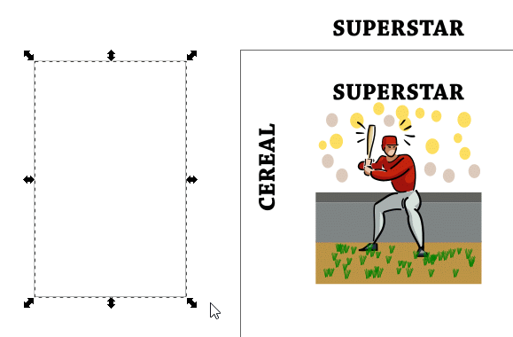
Drawing the starting rectangle for the box.
You will now skew the rectangle to simulate a view point from the
top left corner. If the rectangle is deselected, reselect it, and choose
Object > Transform… Click on the Skew tab,
choose the degree sign (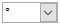), and type 15 in the Vertical
text box. Click on the Apply button. The rectangle looks like it
is rotated through a small angle.
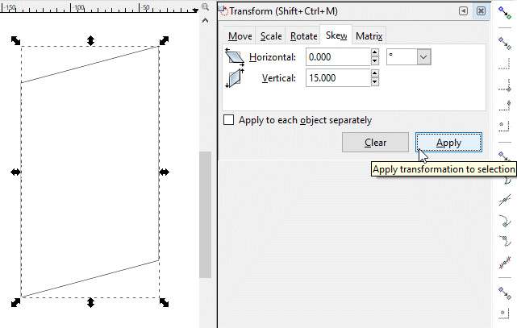
Skew transforming the rectangle to simulate a change
in view point.
Press <Ctrl>-D to duplicate the skewed rectangle and drag
the duplicate to the left and up a little from the original. You are
creating a 3-D box viewed from its upper left corner.
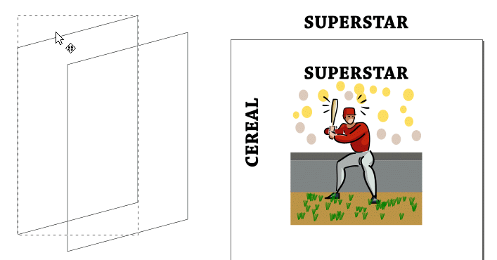
Duplicating the skewed rectangle.
The duplicate quadrilateral (it does have four sides) lies topmost
in the image stack, above the original quadrilateral. Inkscape right now
“thinks” that it is the front side of the box. You need to
send it to underneath the original so Inkscape will interpret it as the
backside of the box.
Click on the Lower selection to bottom icon () in the Tools Control Bar. The duplicate figure is
now the back side of the box shape.
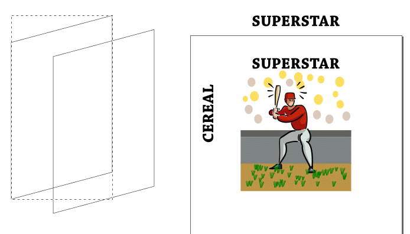
Moving the duplicate to underneath the original figure
in the image stack.
Both quadrilaterals are objects and Inkscape “sees”
them as such. You need to transform them into paths and merge the paths
into one item (one merged path) in order for the Extrude tool to
work.
<Shift>-click the duplicate quadrilateral to group-select it
with the original. Choose Path > Object to Path to
convert both quadrilaterals from objects into paths.
Then, with both paths selected, click on the Group selected
objects icon () in the Tool Controls Bar to
merge them into a single path item. You will see no change in the paths
or their bounding boxes, but Inkscape now recognizes them as a collection
of connected nodes and paths, something that the Extrude tool
can work with.
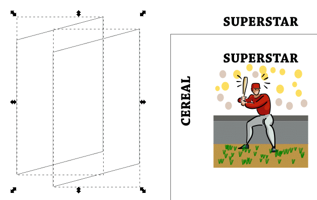
The two quadrilaterals are now one merged
path.
You will now create the 3-D box. With the two quadrilaterals that
make up the front and back sides of the box selected, choose
Extensions > Generate from Path > Extrude… In the
Extrude dialog box, select Polygons for the Mode
and check the Live preview checkbox.
Click on the Apply button. After a few seconds of image
processing behind the scenes, the remaining four sides appear.
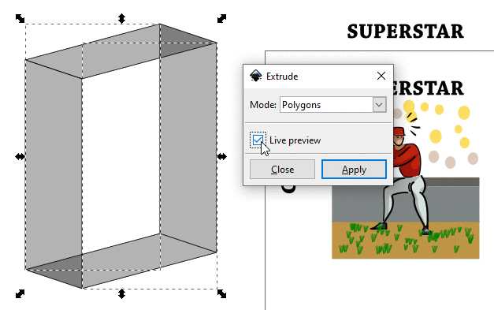
The Extrude tool has created four new sides to make a
3-D box.
Click on the Close button to dismiss the Extrude
dialog box.
Now that the box has been created, we need to prepare its sides
to receive images for the front, left, and top sides using the
Envelope tool.
Note that the front and back sides are still selected (they have their
bounding boxes). The new sides are four paths that are merged into one
group and are not selected.
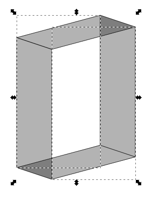
Front and back sides are selected, new sides are
not.
Ungroup the new sides by first marquee-selecting the whole box
shape with the Select tool () and then by clicking on the
Ungroup selected groups icon () in the Tool Controls Bar.
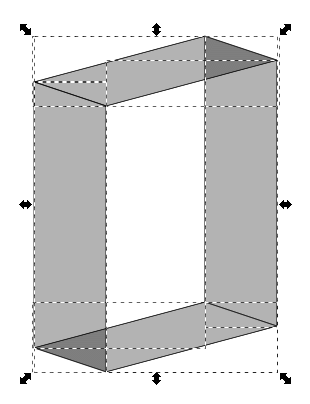
Ungrouping all sides of the box and the four short
diagonal lines.
Note that all six sides of the box have bounding boxes. There are
also four short diagonal edge lines that have their own boxes. You will
delete them later.
Emplacing an Image on the Box Front Side Using the Envelope Tool
The 3-D box has been created. It is now time to dress up its sides.
You will prepare the front side image of the box for use with the
Envelope tool. Like the Extrude tool, the Envelope
tool also works with paths. So, you’ll convert all the objects that
make up the baseball player artwork from objects into paths.
Marquee-select the baseball player artwork to group-select all the
objects that make it up. Don’t forget that the upper part of the
image is white and is part of the background. Changing to Outline
view might help. If you don’t select everything at first, just
click off the artwork to deselect it and then marquee-select again.
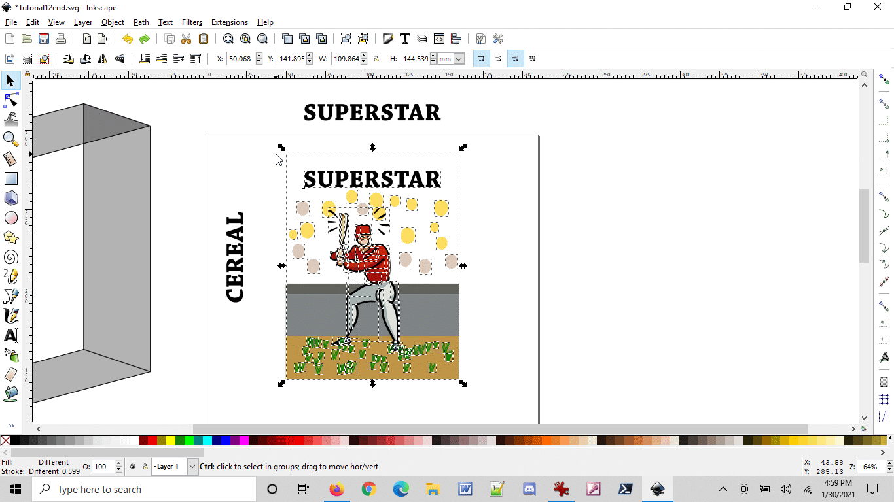
Group-selecting the baseball player artwork.
With the baseball player artwork selected, choose Path >
Object to Path. You might see a momentary flicker as Inkscape
performs the conversion. Then, with the artwork still group-selected,
click on the Group selected objects icon () in the Tool Controls Bar to group all the paths into one
grouped path.
Artwork converted to paths and regrouped.
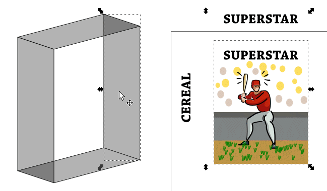
Front side of box cannot be properly selected.
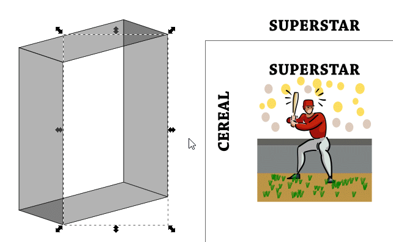
Right side of box sent to bottom of image stack. Front
side of box can now be properly selected.
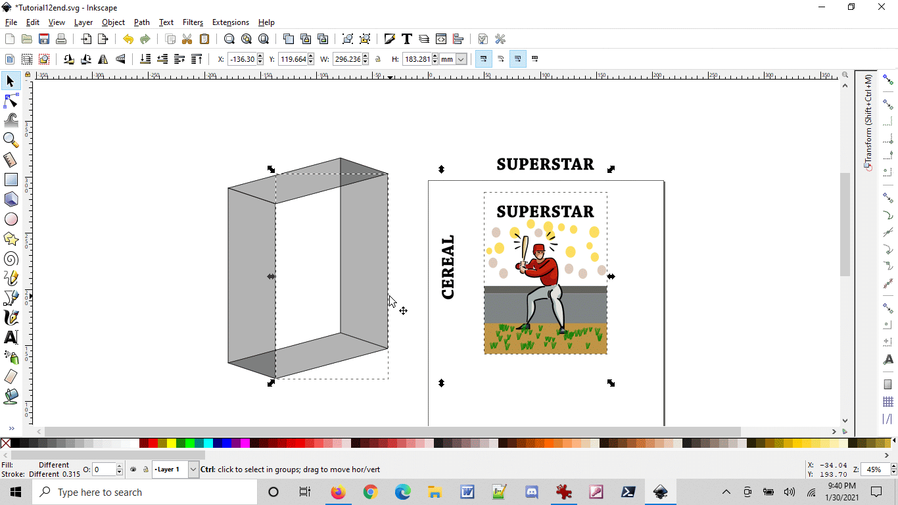
Front side of box properly selected as recipient for
front side image.
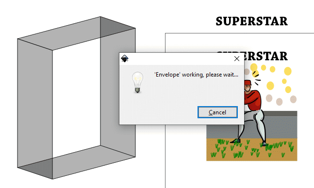
Envelope function working.
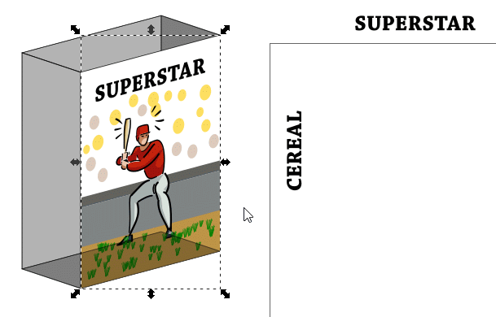
Front side image properly emplaced.
Note that you can see the bottom side of the box through the front
side image. You’ll resolve that detail shortly.
Working with the Extrude Function and Envelope Function in
Combination
In this section, you will prepare and emplace the text CEREAL onto the
left-hand side of the box. You will encounter an idiosyncracy of the
Envelope function during emplacement and learn how to work around
it.
Move the text CEREAL to the left side of the box figure. Having
objects in near proximity makes it easier to visualize what you are doing
and access objects immediately.
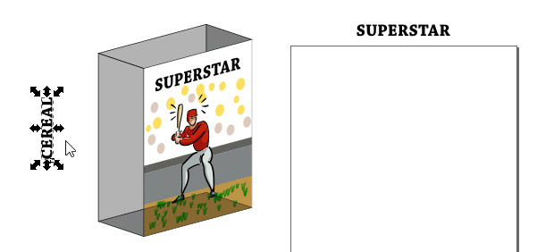
Moving the text CEREAL next to the box
figure.
With the Rectangle tool (), draw a rectangle around the
CEREAL text that’s about the same size as the left side of the box.
The size does not have to be exact because the Envelope function
will resize the rectangle to fit the geometry of the box left side.
Choose Object > Align and Distribute… and
center the text CEREAL using the Center on horizontal axis and
Center on vertical axis options.
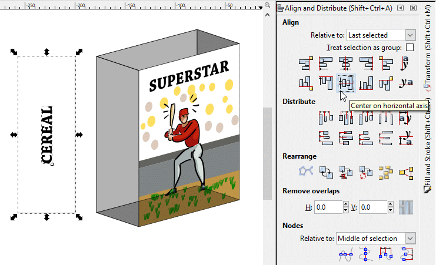
Drawing the rectangle image for the left side of the
box.
Note that the text CEREAL is still selected and shows the baseline
marker at the bottom right of the C, indicating that CEREAL is a text
object. You will see it disappear shortly.
Give the rectangle a fill color. (We used a very light blue as
you can see in the Fill and Stroke panel). The rectangle is placed
above the text CEREAL, so the text is covered by the opaque light blue
fill. Also, set the stroke color to none by
<Shift>-clicking on the none swatch () in the Color palette at the bottom of the work window.
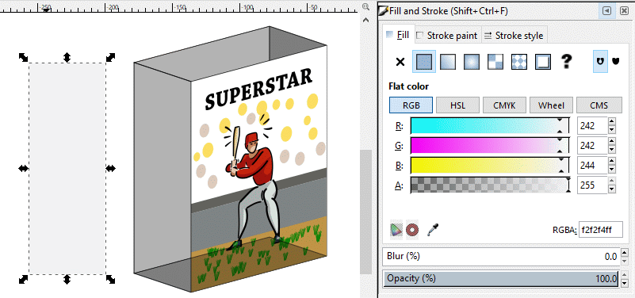
Color the rectangle with a light blue fill and set the
stroke to none.
Click on the Lower selection to bottom icon () in the Tools Control Bar to place the rectangle
underneath the CEREAL text in the image stacking order.
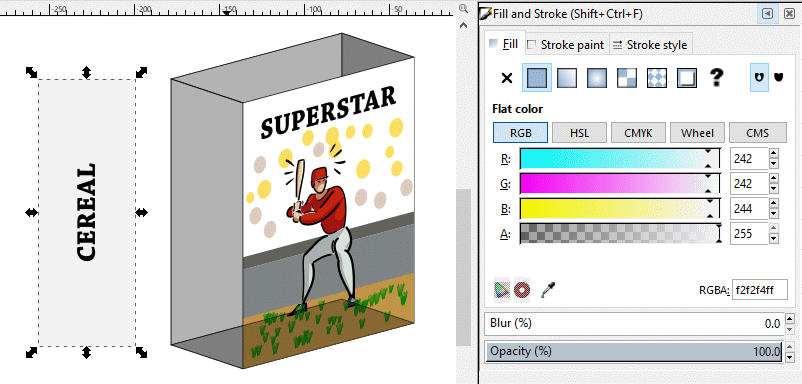
Moving the rectangle to the bottom of the image stacking
order.
With the rectangle still selected, <Shift>-click on the
CEREAL text to group-select it. With both objects selected, choose
Path > Object to Path to convert both rectangle
and text into paths. Note the text no longer has the baseline marker at
the bottom right of the C, indicating that the text is no longer a text
object but a series of line and curve paths.
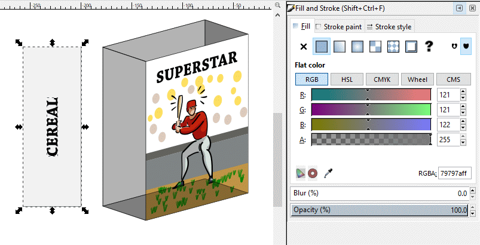
Converting the rectangle and text into paths.
The left side of the box has a color fill that will remain after
the side image is emplaced. You will set the fill to none. Select
the box side and then click on the none swatch () in the Color palette to eliminate the coloration.
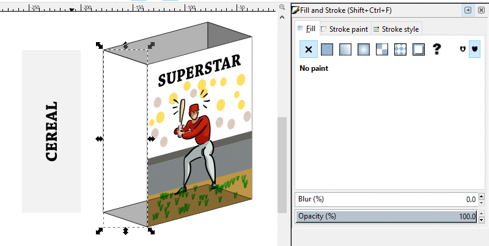none color fill" class = "img-fluid">
Setting the left of the box to none color
fill.
You will now emplace the rectangle + text image onto the left
side of the box.
Click on the image, then <Shift>-click on the edge of the
box’s left side to group-select it.
Note: You cannot select the left side of the box by clicking inside it.
It has no fill color to click on. The Select tool requires a color to
click on in order for the Selection function to work. No color, no
selection.
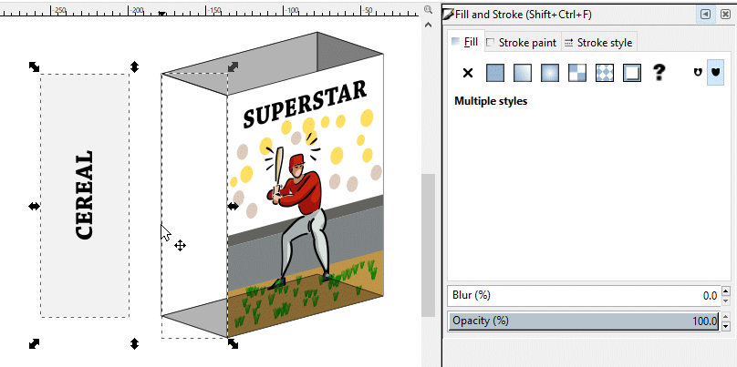
Group-selecting rectangle and box side in preparation to
use the Envelope function.
Choose Extensions > Modify path > Envelope.
The image is now emplaced and it is emplaced upside-down. You
don’t want that.
To remedy this idiosyncracy, click on the Undo last action icon
() in the Tool Controls Bar to undo emplacing the image.
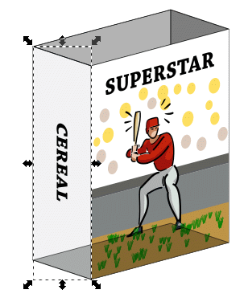
Image emplaced upside-down.
With the rectangle + text image off the box, rotate it
180° by clicking twice on either the Rotate selection
90° counter-clockwise icon () or the Rotate selection
90° clockwise icon () (in the Tool
Controls Bar).
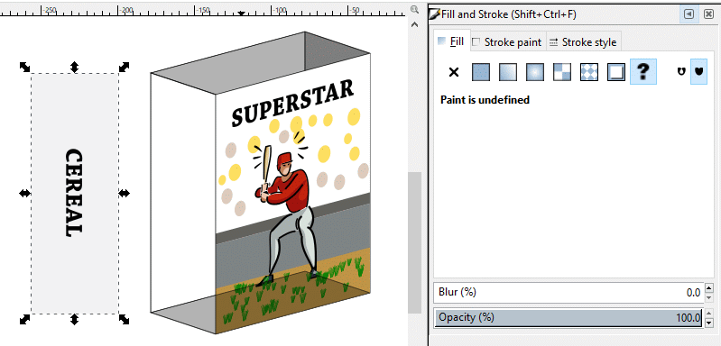
Rotate rectangle + text image 180°.
Group-select the rectangle + text image and left side of the box,
in that order.
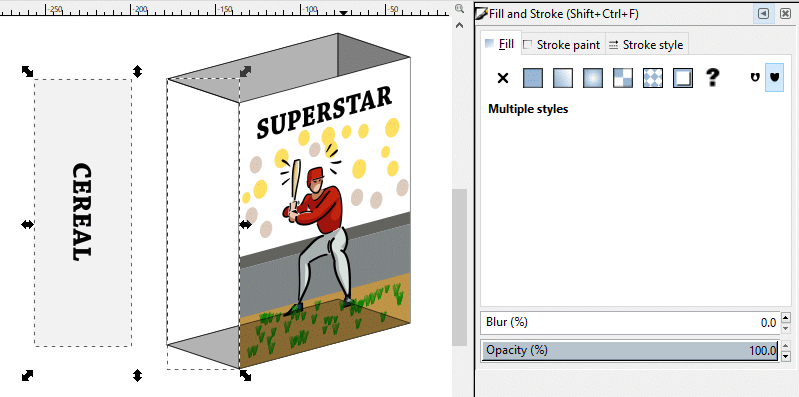
Group-selecting the rectangle + text image and left side
of the box, in that order.
Now, choose Extensions > Modify path > Envelope.
The text, originally upside-down, is now right-side up. Problem
resolved!
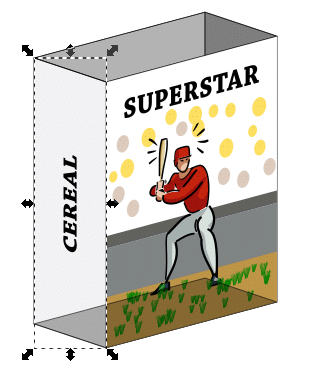
Image is now positioned right-side up.
Current result.
Working with Idiosyncratic Extrude Tool – Envelope Tool
Interactions
In this section, you will mold the image that goes onto the top side of
the box using the Envelope tool. By thinking a problem through and
experimenting with different options for orienting an image, you will find
ways to overcome what looks like an insurmountable problem and break it down
into a sequence of single and simple operations that allow you to obtain
what you want in your design.
You will start this section by drawing a rectangle that has about
the same size as the top face of the box. Using the Fill and Stroke
panel, give the rectangle a slightly darker blue than the side face (we
used the blue color defined in the Fill and Stroke panel ). Give
it a stroke of none as was done earlier with the side face.
Drawing a blue rectangle for the top side of the
box.
Click on the Lower selection to bottom icon () to place the rectangle underneath the text SUPERSTAR
in the image stack.
Rectangle placed underneath the text object.
Choose Object > Align and Distribute… and
center the text SUPERSTAR both horizontally and vertically as you did
earlier with the side text CEREAL. Note that the text SUPERSTAR is a
text object by its baseline marker at the bottom left of the first S.
Centering the text both horizontally and
vertically.
With both the rectangle and text still selected, choose Path
> Object to Path. Both rectangle and text are now just a
collection of line segments and curves. Note that the baseline marker
for the text has disappeared. You see the text, but Inkscape
“sees” just line segments and curves and not as objects
anymore — the Envelope function can work with this
arrangement.
Converting the rectangle and text into paths.
Press <Ctrl>-G to group the rectangle and text into one
group of paths.
Grouping the rectangle and text paths.
Change the fill color of the top side of the box to none
by clicking on the face to select it and then by clicking on the
none swatch () in the Color palette.
Setting the fill color of the top box face to
none.
You will now emplace the rectangle + text image onto the top
face of the box.
Choose Extensions > Modify path > Envelope. The result
below is not the result you want at all. It is oriented 90° to how
it should be.
Image incorrectly emplaced by 90°.
You haven’t met this situation before, and yet, there is a way
to fix it.
Press <Ctrl>-Z to undo the emplacement operation. Click on
the edge of the top face of the box and then choose Path >
Reverse.
Reselect the rectangle + text image and <Shift>-click to
group-select the top face of the box as you had done earlier.
Choose Extensions > Modify path > Envelope. The image
is now a mirror image, reflected horizontally from the original. Because
the result is a horizontal reflection of the original image, you might
have a good idea on how to make a correction.
Image emplaced as a horizontal reflection of the original
image.
For more information on how to use the Envelope function, see
Help > Inkscape Manual > 22. Extensions > Modify Path
> Envelope.
Press <Ctrl>-Z to undo the emplacement operation.
Select the rectangle + text image and then click on the
Flip selected objects horizontally icon () in the Tool Controls Bar. You should
obtain the result below.
Rectangle + text image flipped
horizontally.
Once again, select the Rectangle + text image and
<Shift>-click on the edge of the top face of the box (all of this
should sound very familiar now) to group-select it.
And once again, choose Extensions > Modify path >
Envelope to achieve the result below.
Correct emplacement of the rectangle + text image
onto the top face of the box.
Final Editing of the Artwork
The Extrude function creates artefacts that need to be cleaned up
before declaring any artwork finished.
Group-select the front, side, and top faces of the box. Drag the
collection off to the side of the artboard to reveal the box framework
that the Envelope process creates.
Moving the artwork to the side of the
artboard.
Marquee-select the box framework and press the <Delete> or
<Del> key to delete it. Then, move the artwork onto the
artboard.
Moving the artwork onto the artboard.
Your artwork has a clean look to it. One last touch is to add a
border to the front face to give the upper portion better edge
definition.
Final Edits
The box artwork is almost complete. You will now add a finishing touch
by applying a border to the front face image of the box. Most of the work
involves ungrouping levels of groups until you can finally access the
bottommost image, which is the white rectangle that underlies the entire
image. Only then will you be able to apply a border that encompasses only
the very edge of the front face.
Click on the front face with the Select tool ().
Then press <Shift>-<Ctrl>-G to ungroup the top level of
objects that make up the face image. Background faces, the baseball
player, the text SUPERSTAR, and tufts of grasses have bounding boxes to
indicate that they are now separate objects.
Ungrouping the top level of grouped objects.
Click off the artwork to deselect it. Then, click on the white
upper portion of the background to select it. Note that the background is
comprised of four objects: three colored panels that make up the lower
half of the background and the white upper portion. Right now, they are
grouped.
Press <Shift>-<Ctrl>-G to ungroup these four objects.
They now have their own bounding boxes.
Ungrouping the four background rectangles.
Click off the artwork to deselect it. Then, click again on the
white upper portion of the background to select it. Only the white
portion of the background has a bounding box. You are now in a position
to give it a colored border.
Only the white portion of the background is
selected.
Using the Fill and Stroke panel, click on the Stroke
paint tab, the Flat color icon, and enter the numbers
below into the color value text boxes to produce a light blue color for
the white background panel. Press <Tab> after the first three values
to move the cursor to the next text box. Press <Enter> or
<Return> after you have entered the last value.
Giving the front face of the box a blue edge.
Click anywhere off the artwork to deselect it.
Finished artwork.
File > Save. File > Close this
file.
You have finished Tutorial 12. It is your introduction to
Inkscape’s methodology for creating artwork that has a 3-D look to it.
Ways to enhance depth, the perspective of distance, and the change in
illumination with depth include using the Perspective function, gradient
tools, selective blurring of background objects, and color blending to
give texture to your third dimension.
Continue to explore what Inkscape has to offer you. Let your imagination
open up new scenes for you and your desire to explore propel you forward
and expand your personal frontier of what’s possible.
Review Questions
What is the difference between the Spray copies of the initial
selection mode and the Spray clones of the initial selection
mode when using the Spray tool?
Can you spray grouped objects? How?
Does the Extrude tool work with objects, paths, or both?
What can you do when an image is not emplaced properly on an extruded
object?
Review Answers
Spray copies of the initial selection mode allows you to
make duplicates of the original source object or objects that are
individual, stand-alone copies. They can be treated as individual objects.
Spray clones of the initial selection mode allows you to make
duplicates of the source objects that are connected or linked to the
source objects. So, if you modify one source object, all the linked clones
are modified as well.
Yes, you can spray objects that have been grouped. First, select
the objects that you want to group, then press <Ctrl>-G to group
them or click on the Group selected objects icon () in the Tool Controls Bar.
The Extrude tool works only with paths. Convert an object
to which you plan to add a third dimension into a path by selecting it,
then choosing then Path > Object to Path option. Then
use the Extrude tool.
There are four options available to you to resolve the emplacement
problem. Keep in mind that emplacement problems are problems of
orientation which can be resolved one step at a time. You might need to
use each option one after another if the situation requires it. Each time
that you use a step, you can see how the orientation improves and comes
closer to resolution.
If the transferred image is rotated by 90°, undo the transfer
by pressing <Ctrl>-Z or clicking on the Undo last action
icon () in the Tool Controls Bar. Choose
Path > Reverse. Then, reuse the Envelope tool.
If the transferred imaged is rotated by 180° either
horizontally or vertically, undo the transfer (<Ctrl>-Z or
Undo last action ()), rotate the original
image 180° horizontally or vertically as the situation requires,
and then reemplace the image with the Envelope tool.
If the transferred image is a mirror image of the original where
it has been flipped horizontally or vertically, undo the transfer
(<Ctrl>-Z or Undo last action ()). Select the original image and then click on the Flip
selected objects horizontally icon () or Flip selected objects
vertically icon () as the
situation requires. Then, reemplace the image with the Envelope
tool.
The emplaced image might have undergone both rotation and
mirror-imaging. Undo the emplacement and then test one or another of
the options above until you see improvement in the image’s
orientation. Once you see what you want, then you will have conquered
the beast. Congratulations!

 ) to where you want it in the
window.) If you don’t want to leave the image open, choose
File > Close.
) to where you want it in the
window.) If you don’t want to leave the image open, choose
File > Close.{kind=link}
{kind=link}

 ) in the Tool Controls Bar twice so they stand
behind the strokes.
) in the Tool Controls Bar twice so they stand
behind the strokes. ), click anywhere off the
artwork to make sure that no objects are selected.
), click anywhere off the
artwork to make sure that no objects are selected.

 ) in the toolbox, click anywhere on the work
window to set the location of the text, and type SUPERSTAR. The text will
be the in the last font and in the last font size you used. In the figure
below, the font is sans-serif, normal, 12 pt.
) in the toolbox, click anywhere on the work
window to set the location of the text, and type SUPERSTAR. The text will
be the in the last font and in the last font size you used. In the figure
below, the font is sans-serif, normal, 12 pt. ) in the Tool
Controls Bar to make the text vertically oriented. This text CEREAL will
be placed on the side of the eventual 3-D box.
) in the Tool
Controls Bar to make the text vertically oriented. This text CEREAL will
be placed on the side of the eventual 3-D box. ).
Make it a little narrower in width than the box front image.
).
Make it a little narrower in width than the box front image. ) in the Tool Controls Bar to
merge them into a single path item. You will see no change in the paths
or their bounding boxes, but Inkscape now recognizes them as a collection
of connected nodes and paths, something that the Extrude tool
can work with.
) in the Tool Controls Bar to
merge them into a single path item. You will see no change in the paths
or their bounding boxes, but Inkscape now recognizes them as a collection
of connected nodes and paths, something that the Extrude tool
can work with.
 ) or the Rotate selection
90° clockwise icon () (in the Tool
Controls Bar).
) or the Rotate selection
90° clockwise icon () (in the Tool
Controls Bar).